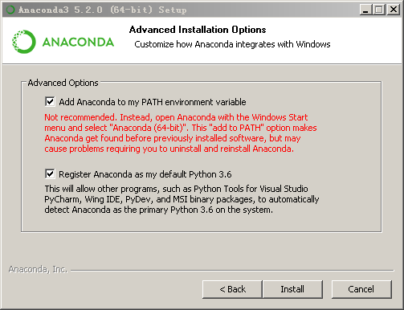
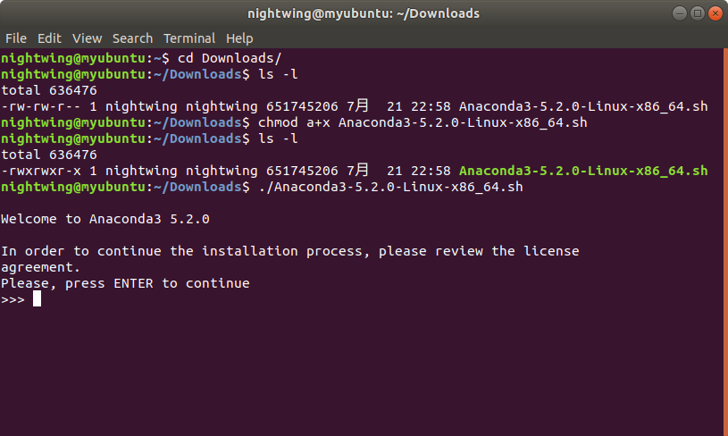

2 基础：安装
我们在本书中提及“Python 3”时，我们指的是目前在数据分析和科学计算领域里最为流行的Anaconda Python发行版中的Python 3。由于Anaconda Python发行版使Python多版本环境和包的安装管理变得方便灵活，并且集成了适合数据分析和科学计算的工具，使其已成为大多数人安装Python的首选，所以这里我们选用最新版的Anaconda Python。值得注意的是，通过Python官网也可以下载各个版本的Python，但其仅仅包含Python解释器，所以这里我们并不推荐。
在 Windows 中安装
访问 https://www.anaconda.com/download/ 并下载最新版本的Anaconda Python（64位）。在本书撰写时，最新版本为Anaconda Python 5.2（其中包含Python 3.6.5）。其安装过程与Windows平台的其他软件的安装过程无异。具体安装流程如下所示：
第一步：点击安装包文件，开始我们的安装过程，点击“下一步”。

第二步：此处是Anaconda的许可证，点击“同意”才能进入下一步。

第三步：此处不推荐安装给所有用户，因为需要管理员权限。选择第一个选项后，只有当前的Windows账户可以使用；若选择第二个选项，则所有登录本机的Windows账户均可使用。由于Windows多账户使用场景较少，所以选择第一个选项足以。

第四步：选择你希望的安装路径，前提是有足够的硬盘空间。考虑到程序本身的大小和今后的使用，建议选择剩余空间10GB以上的分区。

第五步：此处需注意，在这一步中我们还是推荐勾选第一个选项，这一选项的作用是将Python添加到Windows系统的环境变量PATH中，虽有提示不建议我们勾选，但是只要我们只安装了一个版本的Python，就不会有什么影响。这么做也是为了之后能在cmd中运行Python。

第六步：Anaconda主体安装完毕后会询问是否安装微软的VSCode编辑器，这里我们选择安装，VSCode是微软开发的一款强大的编辑器，开源，有非常丰富的插件来拓展其功能，本书就是在VSCode上配合 `Markdown All in One` 、 `Markdown PDF` 和 `vscode-pdf` 插件编写的。VSCode可以配合相关插件变成强大的Python开发环境。相关技巧，读者可以在网上查询。

第七步：完成安装，点击“完成”。第一个选项勾选后，浏览器会自动打开Anaconda Cloud的网页，读者可以将Python的包、notebook文件、Python项目以及配置好的Python环境上传到Anaconda Cloud上，以供存储和分享；第二个选项勾选后，浏览器会自动打开相关网页让读者了解如何使用Anaconda Python。

第八步：在Windows开始菜单中找到Anaconda Navigator，点击即可启动。Anaconda Navigator是Anaconda Python各项功能的集合，在其中读者可以通过图形界面方便地安装和管理Python环境和包，以及诸如VSCode和Spyder等工具；菜单中的Anaconda Prompt是Anaconda Python的命令行界面，可通过相应的命令实现Anaconda Navigator里的部分功能，比如Python环境和包的安装和管理等，同时也支持Windows系统的命令行指令；Jupyter Notebook能够在浏览器里编辑Python的Notebook文件，能够实现交互式编程；Spyder是Python的IDE，适用于数据处理和科学计算，界面和功能类似于Matlab。


在 GNU/Linux 下安装
对于GNU/Linux用户，访问 https://www.anaconda.com/download/ 并下载最新版本的Anaconda Python（64位）。需要注意的是几乎每一个Linux发行版自身就带有某一版本的Python，但一般是不推荐直接使用的，一方面是因为其没有Anaconda Python方便，另一方面是可能会牵扯到Linux系统底层的依赖问题，影响Linux系统的稳定性。具体安装流程如下：
第一步：点击 Terminal 应用快捷方式或通过按下 Ctrl + Alt + T 组合键打开命令行，用 cd Downloads/ 命令切换到下载有安装包的文件夹中，通过 ls -l 命令我们发现安装包默认没有可执行权限，所以我们用 chmod a+x Anaconda3-5.2.0-Linux-x86_64.sh 命令赋予安装包可执行权限。之后再用 ls -l 命令查看发现安装包已经可以被执行了，于是使用 ./Anaconda3-5.2.0-Linux-x86_64.sh 命令来执行安装包，按照命令行中的英文提示，按下 Enter 回车键开始安装过程。

第二步：按多次 Enter 回车键之后，会被询问是否接受license，输入 yes 之后点击 Enter 回车键。

第三步：正式开始安装过程，耐心等待。这一步无需操作。

第四步：程序主体安装结束后，会被询问是否将Anaconda Python加入到环境变量PATH中，这里我们输入 yes 即可，之后点击 Enter回车键继续，方便日后在命令行中的使用。

第五步：和Windows安装过程类似，我们会被询问是否安装微软VSCode编辑器，这里我们推荐安装，输入 yes 即可。 （由于笔者已经安装，所以这里输入 no 掠过了。）

第六步：安装完毕，关闭当前终端，重新开启一个新的终端使得安装生效，输入 python -V 之后按回车键，我们可以看到此时系统已经开始使用Anaconda版本的Python了。

第七步：输入 anaconda-navigator & 开启Anaconda Navigator。

第八步：成功启动，至此安装完毕。值得注意的是与Windows版本不同，Linux版的Anaconda Python安装完毕之后，系统菜单里并没有相应的快捷方式，Anaconda Navigator、Jupyter Notebook和Spyder都得在命令行中启动。

附注：$ 是 Shell 的提示符。根据你电脑所运行的操作系统的设置的不同，它也会有所不同，在之后的内容中我们会使用 $ 符号来代表提示符。
注意：输出的内容取决于你安装的Anaconda Python的版本。
在 macOS 下安装
对于macOS用户，安装过程和Linux类似。通过按键 Command + Space （以启动 Spotlight 搜索），输入 Terminal 并按下 Enter 键来启动终端程序。
总结
从现在起，我们将假定你已经在你的系统中安装了Anaconda Python。接下来，我们将要撰写我们的第一个 Python 程序。